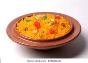

A brightly colored sweet rice that's a Pakistani favorite. A brightly colored sweet rice that's a Pakistani favorite. Shutterstock Traditionally served on special occasions, this brightly colored sweet rice is a Pakistani favorite. Made with sugar, milk, food coloring and flavored with cardamoms, raisins, pistachios and almonds, zarda is either yellow or made with various food colorings to give it a multicolor effect. Khee
